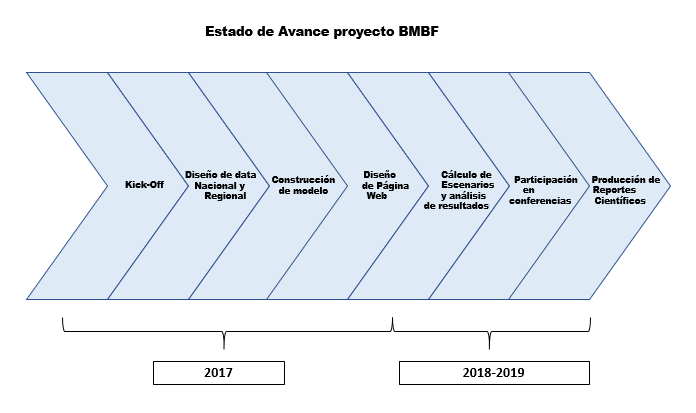

Sobre el Proyecto COFORCE
Copper Forecasting Chile ,COFORCE, corresponde a un proyecto de investigación colaborativa que, con financiado de CONICYT, tiene como eje principal de interés la generación de información relevante para la implementación de políticas públicas relacionadas al sector minero.
Este proyecto se encuentra patrocinado actualmente por la Universidad Adolfo Ibáñez y la Institution of Economics Structures Research, además de tener investigadores asociados a la Universidad Diego Portales.
Los principales objetivos del proyecto son:
Desarrollo de un modelo insumo producto regional
Presentación de instrumental útil para discusión de políticas regionales
Para el desarrollo el modelo, se estimarán un conjunto de ecuaciones bajo una aproximación de la teória macroeconómica que abarca una síntesis entre modelos neoclásicos y neokeynesianos. Dentro de los supuestos incorporados al modelo se pueden destacar la inclusión de racionalidad limitada de agentes, rigidez de precios, mercados imperfectos, entre otros supuestos.
Una de las características de este modelo es que tiene diferentes grados de agregación, uno a nivel nacional y otro a nivel regional. De esta forma, para estimar el efecto de shocks en el mercado del cobre, se desarrollará un modelo a nivel nacional y un modelo regional, donde el último permite medir los efectos de variables relacionadas a la minería sobre el desarrollo de las regiones.

Las principales fuentes para realizar la estimación de las ecuaciones de nuestro modelo serán:
- Cuentas Nacionales Integradas
- Matrices insumo producto
- Datos demográficos
- Series de precios de inputs
- Encuestas laborales
El proyecto BMBF corresponde a un proyecto de 3 años en los que tanto el equipo alemán y el equipo chileno se han designado tareas como la recopilación de bases de datos, calibración de modelos y análisis de resultados de escenarios propuestos.
Durante el año 2017 los equipos de investigación han desarrollado las bases de datos a utilizar junto con el desarrollo de los modelos nacionales y regionales. Los años posteriores, en un trabajo en conjunto, se espera presentar los análisis de diferentes simulaciones con las respectivas implicancias de política nacional y regional.
